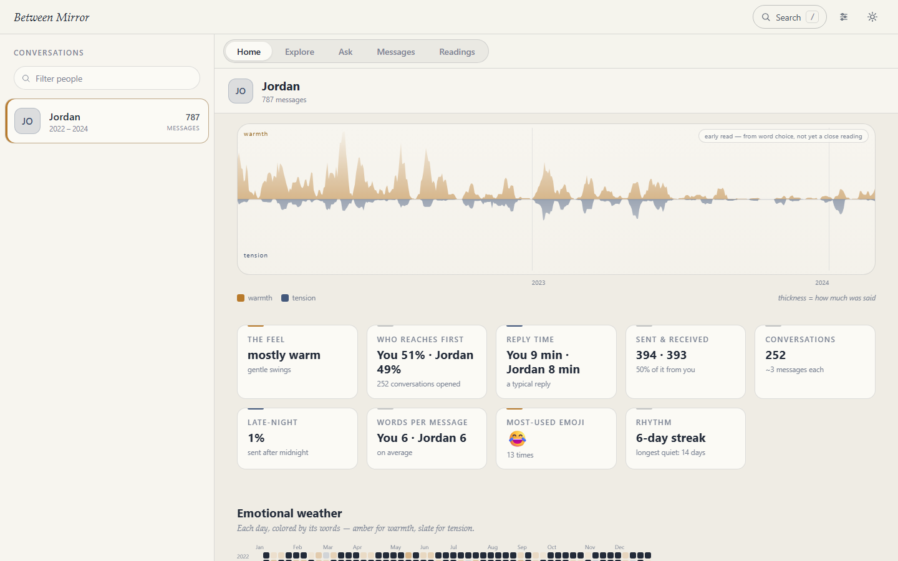
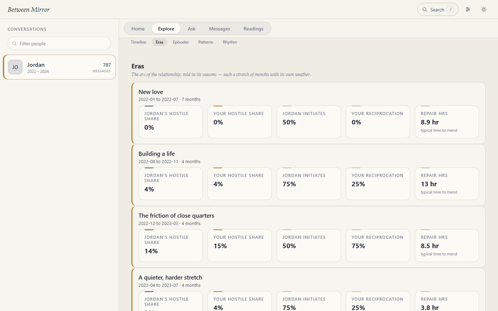
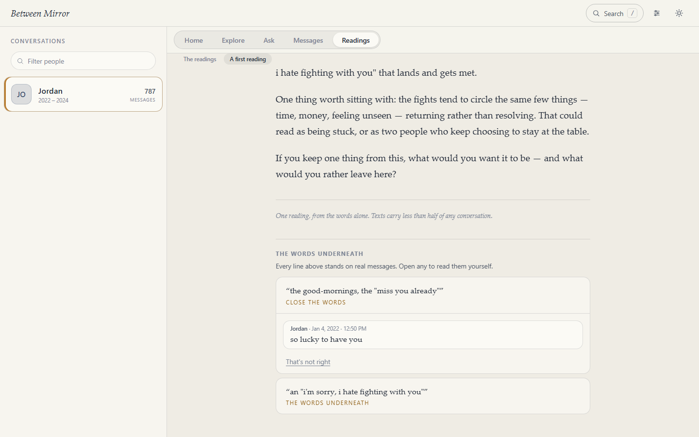
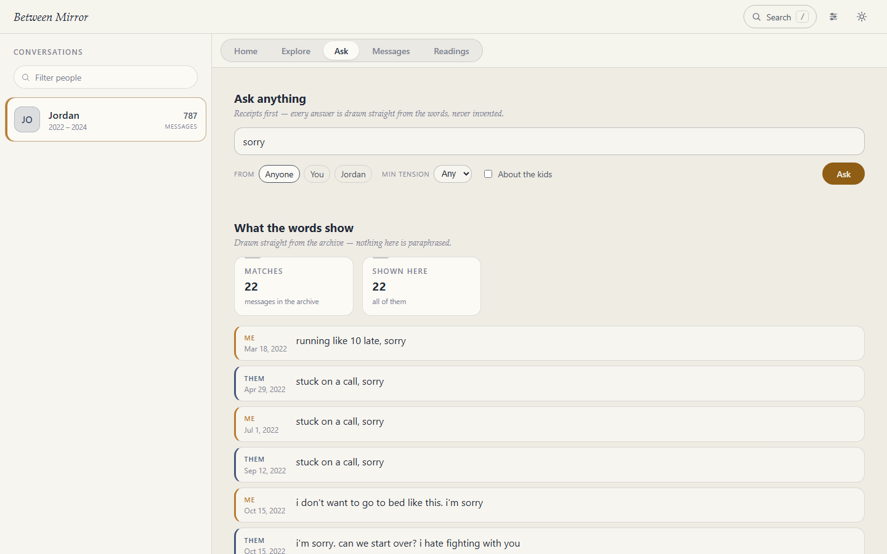

Between Mirror turns years of messages into a private, explorable relationship history — with the words underneath every observation.
Point it at an archive of your own SMS/MMS and it becomes something you can walk through: how the temperature moved across the years, which stretches were hard, what the two of you actually said. Your archive stays on your computer. Deterministic views never send message text anywhere; optional written readings use only the model path you explicitly choose.

What you'd see
The years, as weather. Warmth above the line, tension below, thickness for how much was said. It reads left to right, like a life does.
Seasons, named. The arc broken into eras — each a stretch of months with its own temperature and its own rhythm of rupture and repair.
The hard stretches, listed. When, who carried the heat, how severe it got, and whether anyone circled back. Every row opens the actual messages.

Every claim shows its receipts
This is the part that matters. A model that writes beautifully about your marriage without showing you what it read is not an instrument — it's a horoscope.


So the rule is mechanical, not editorial: the model may only emit claims that carry evidence ids, each id must resolve to a real message or the claim is dropped, and even the connective sentences between paragraphs are written by the application from fixed templates. There is nothing in a reading that is not either receipted or deliberately empty of content. How that works →
Does my archive leave my computer?
The counting never does. The river, the eras, the episodes, the patterns, the exports — all of it is computed on your machine, for free, forever. The server refuses to start if it is listening on anything but loopback, and a test in the build proves it.
The written readings are your choice. They need a language model, and you pick which: a local one (nothing leaves), your Claude subscription, or your own API key. You see the cost before anything runs. The default is local-only.
No hosted archive, no application accounts, and no telemetry. Off-device model use is explicit and opt-in. The full privacy position → · what it does not protect you from →
What it reads today
Android SMS/MMS archives, exported with the SMS Backup & Restore app. That is the only input the parser understands right now.
iPhone is not supported yet. There is no path for an iPhone backup, and iMessage traffic isn't in an Android SMS archive at all. If both of you were on iPhone, the archive doesn't exist. iMessage and WhatsApp are the next major version, not a promise with a date on it.
Try it without trusting it first
Try the fictional demo — the real application, in your browser, reading an
invented couple's archive. Nothing to install, nothing of yours involved, and it talks to
nothing but this site. Or run npm run demo:serve from the source for the same thing
with the writes switched on. More about the demo →
What it costs
The software is free and always will be — AGPL, source open, the analysis unpaywalled. A signed one-click installer is planned at $29 for the first hundred people and $49 after that. It is not for sale yet and there is nothing to buy on this site. Why it's priced that way →
Or build it yourself
Node 22 or newer, five minutes, one command. The analysis is the same code either way; what the installer adds is the packaging — signing, guided setup, migrations, updates. Instructions →
What this is not. Not a therapist. Not a judge of who was right. Not an abuse detector. Not a way to build a case against someone. It shows you what was said and when, and it points at the words. Everything else is your reading.